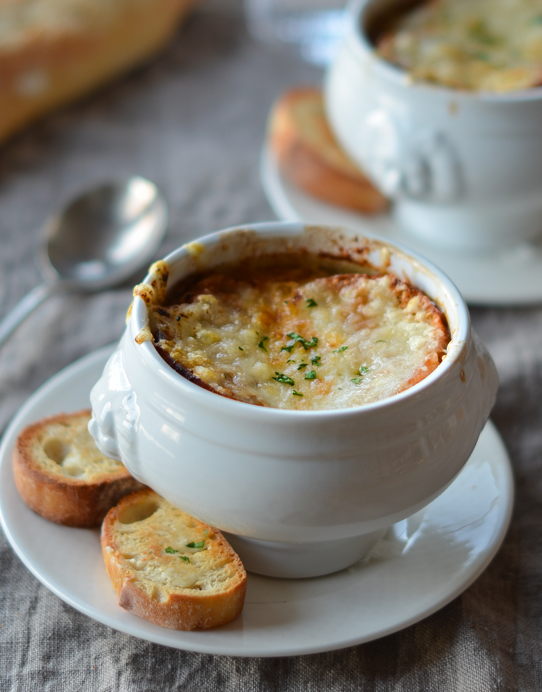

Odin Recipes
Onion Soup

No other recipe can compare to this recipe for taste and simplicity of preparation. This is the perfect onion soup!
There's nothing cozier than a warm bowl of freshly made French onion soup. With this top-rated recipe, you can make restaurant-worthy
French onion soup in the comfort of your own kitchen.
French onion soup, or soupe à l'oignon gratinée, is a classic French dish made with caramelized onions and beef stock or broth. The soup is
topped with bread and cheese, then gratinéed to rich, gooey perfection. It's traditionally served in a ramekin or a ceramic crock with a handle.
Ingredients
- ½ cup unsalted butter
- 2 tablespoons olive oil
- 4 cups sliced onions
- 5 cups beef broth
- 2 tablespoons dry sherry
- 1 teaspoon dried thyme
- 1 pinch salt and pepper to taste
- 4 slices French bread
- 4 slices provolone cheese
- 2 slices Swiss cheese, diced
- ¼ cup grated Parmesan cheese
Steps
- Met the butter- Melt butter with olive oil in an 8-quart stock pot over medium heat.
- Add onions- Add onions to butter and continually stir until tender and translucent. Do not brown the onions.
- Add other ingredients- Add beef broth, sherry, and thyme. Season with salt and pepper. Let simmer for 30 minutes.
- Preheat oven- Preheat your oven's broiler.
- Prepare for oven- Ladle soup into oven-safe serving bowls and place one slice of bread on top of each (bread may be broken into pieces if you prefer).
- Add cheese- Layer each slice of bread with a slice of provolone, 1/2 slice diced Swiss and 1 tablespoon Parmesan cheese.
- Broil- Place bowls on a cookie sheet and broil in the preheated oven until cheese bubbles and browns slightly, 2 to 3 minutes.
- Ready- Serve hot and enjoy!